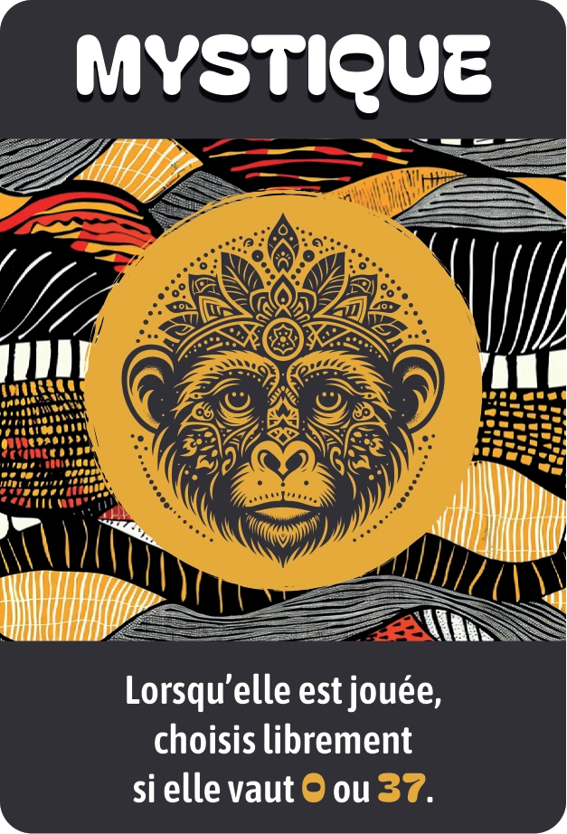
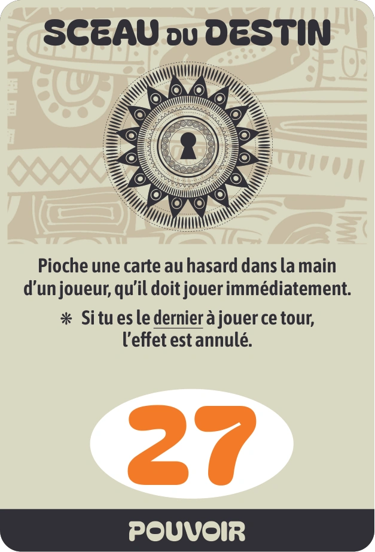
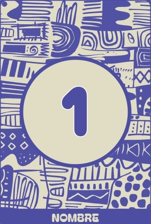
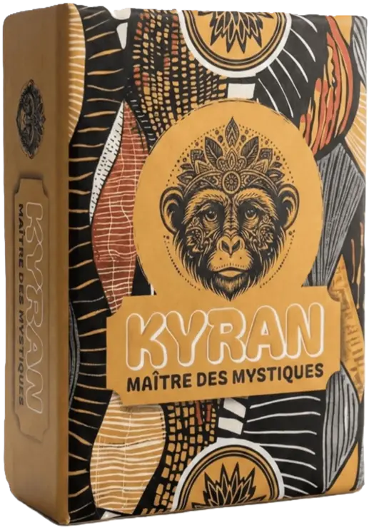
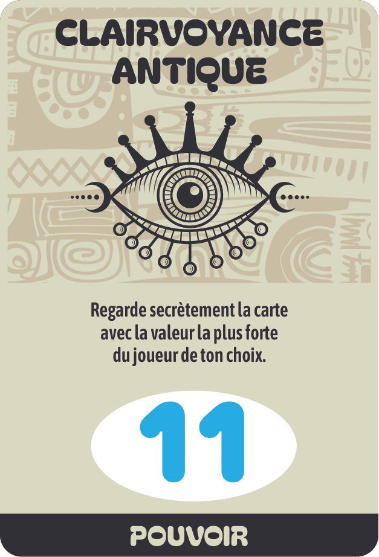
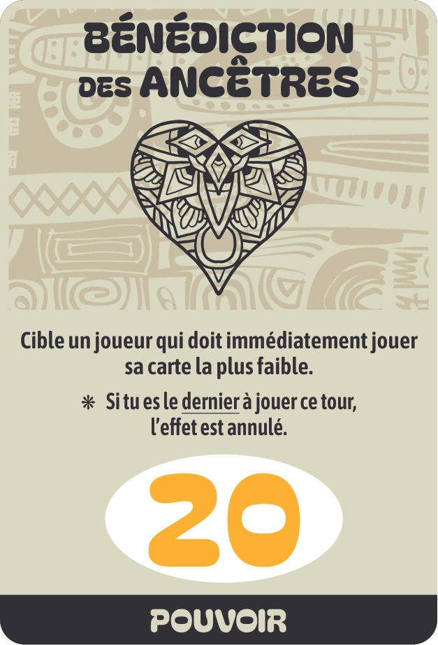
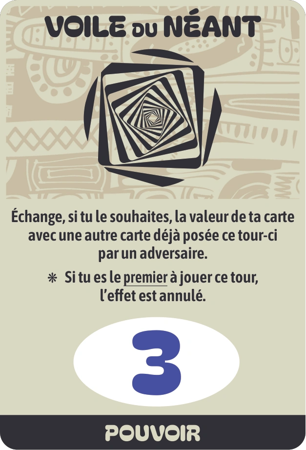

Défiez votre intuition
KYRAN, le jeu de cartes de plis, de bluff et de paris
Un jeu de cartes rapide mêlant plis, paris et bluff. Règles en 2 minutes, parties intenses de 30 minutes, et manche finale délirante jouée la carte collée sur le front !




Qu'est-ce que KYRAN ?
KYRAN est un jeu de cartes de plis pour 3 à 6 joueurs, conçu et édité en France par Corentin Sence. À chaque manche, chacun annonce le nombre exact de plis qu'il va gagner. Une règle simple fait tout le sel du jeu : la somme des annonces ne peut jamais égaler le nombre de plis de la manche, donc au moins un joueur se trompera. Se tromper coûte des cartes Vie, et celui qui en garde le plus devient Maître des Mystiques.
Le jeu reprend le principe du Tarot Africain et y ajoute quatre cartes Pouvoir, une carte Mystique et une manche finale jouée la carte sur le front. Une partie dure environ 30 minutes, dès 8 ans. Pour situer KYRAN, comparez-le aux autres jeux de plis ou aux jeux comme Skyjo, et testez-le gratuitement dans l'Initiation.
Ambiance autour de la table
Des règles rapides à comprendre, du bluff et des fous rires à chaque partie.

Partie entre amis : bluff, paris tendus et fous rires garantis autour de la table !
« Ce qui m’a particulièrement plu, c’est l’ambiance générée autour de la table. Les phases de bluff, les paris ratés, les retournements de situation et certaines manches spéciales créent de nombreux moments de rire et de surprise. »
Toto Club des Testeurs Vine« Ce qui fait vraiment la différence, ce sont les cartes pouvoirs. Elles provoquent des retournements de situation imprévisibles qui cassent la routine et maintiennent la tension jusqu'au bout. »
Patrick ✓ Achat vérifié AmazonLes 5 cartes spéciales
Des cartes uniques pour changer le cours de la partie
La Mystique
Vaut 0 ou 37 au choix au moment de la poser. Elle bat toutes les autres cartes du jeu.
★ Carte la plus forte du jeuSceau du Destin
Tirez une carte au hasard dans la main d'un joueur : il est forcé de la jouer tout de suite.
* Annulé si dernier à jouer ce tour
Clairvoyance
Regardez en secret la plus forte carte d'un joueur pour deviner son jeu.
✓ Active à n'importe quel rang
Bénédiction
Forcez un adversaire à jouer sa plus faible carte pour ruiner son plan.
* Annulé si dernier à jouer ce tour
Voile du Néant
Échangez le chiffre de votre carte avec une carte déjà posée sur la table.
* Annulé si premier à jouer ce tourLe jeu en 1 minute
Découvrez l'ambiance et le rythme des parties en vidéo
Avis des Joueurs & Évaluations Amazon
Note moyenne de 4.7 / 5 sur Amazon (33 avis)
Nickel
Jeu simple et facile
Un jeu mystique et distrayant
Un indispensable pour des soirées animées !!
Ravie
Intéressant
Super jeu
Super jeu à faire en famille ou entre amis. Nous aimons les jeux de société et le kyran est une belle découverte. Idéal pour un cadeau.
Pas mal, mais il existe déjà beaucoup de jeux qui réinventent le tarot africain
Cartes de belle qualité, jeu très sympa
Jeu de bluff simple et sympa 🎲
Commander la Boîte KYRAN
Expédié sous 24-48h · Livraison suivie chez vous en France et dans les pays limitrophes

KYRAN — Jeu de cartes stratégique
3 à 6 joueurs · ~30 min · Dès 8 ans · Édition complète 2026
Contenu du jeu :
Inspiré du Tarot Africain
Un grand classique des jeux de cartes revisité
L'esprit du Tarot Africain en version moderne
KYRAN s'inspire du Tarot Africain (aussi appelé Whist 22) : ici, savoir perdre un pli est aussi important que de le gagner.
Avec des cartes Pouvoir inédites et des règles simplifiées, le jeu offre des parties rapides, pleines de bluff et de rebondissements.
Découvrir l'histoire du Tarot AfricainSur le Blog
Sélections de jeux, idées cadeaux et conseils pour vos soirées.

10 jeux comme Skyjo : les meilleures alternatives en 2026
10 jeux comme Skyjo classés selon ce que vous aimiez, 5 variantes de règles et une adaptation pour y jouer avec un jeu de 52 cartes classique.
Lire l'article
Meilleurs jeux de cartes pour l’apéro et l’afterwork : 9 choix selon la table
Quels jeux de cartes sortir à l’apéro ou en afterwork ? 9 jeux brise-glace pour tables encombrées, arrivées par vagues et collègues qui se connaissent peu.
Lire l'article
Jeux entre amis : 10 jeux de cartes et d’ambiance pour votre soirée
Jeux à faire entre amis : 10 jeux d’ambiance, de bluff et de cartes classés selon votre groupe et la durée de la soirée, avec leurs défauts.
Lire l'articlePrêt à défier votre intuition ?
Commandez votre boîte KYRAN ou essayez une partie d'entraînement gratuite en ligne.
Comment jouer en 3 minutes ?
Le principe en 3 étapes simples :
1. Annoncez vos plis
En début de manche, devinez combien de plis vous allez remporter. Attention : le total des paris ne tombe jamais juste, il y aura forcément des perdants !
2. Jouez vos cartes
La carte la plus forte remporte le pli. Les cartes Pouvoir permettent de piéger les autres ou de perdre un pli exprès pour respecter votre pari.
3. Gardez vos vies
Pari réussi ? Vous gardez vos vies. Pari raté ? Vous en perdez. La dernière manche se joue avec la carte sur le front. Le dernier en jeu gagne la partie !
Voir les règles complètes